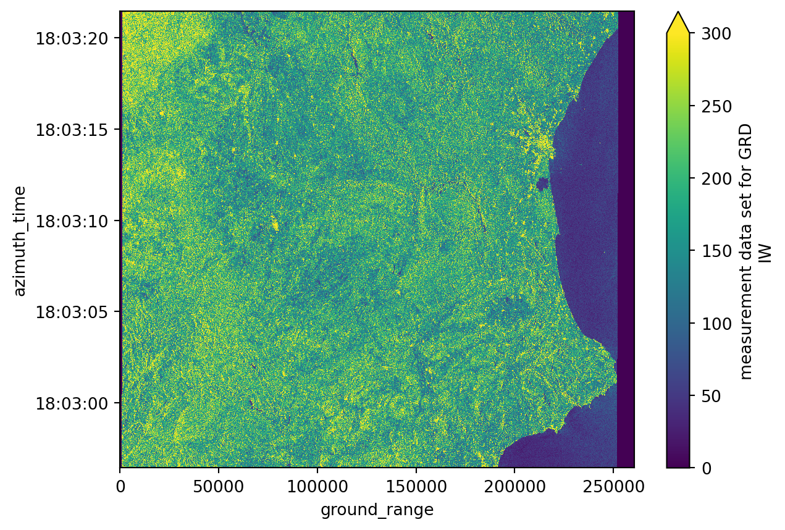
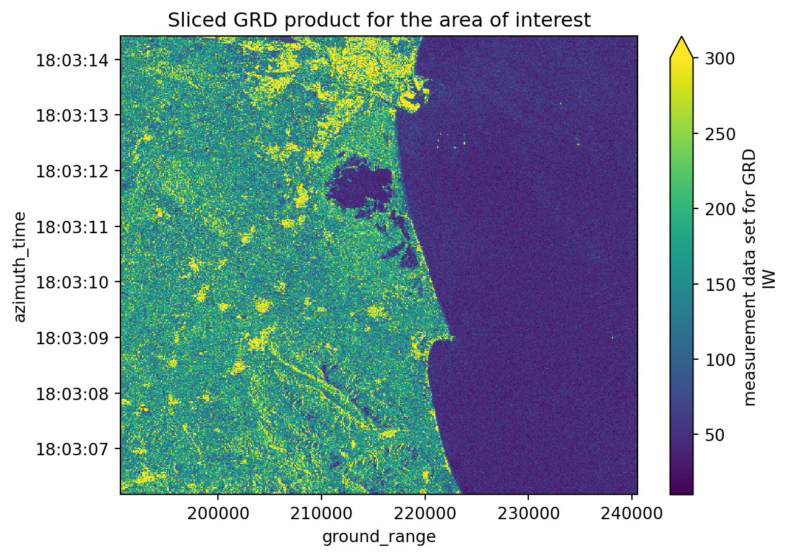
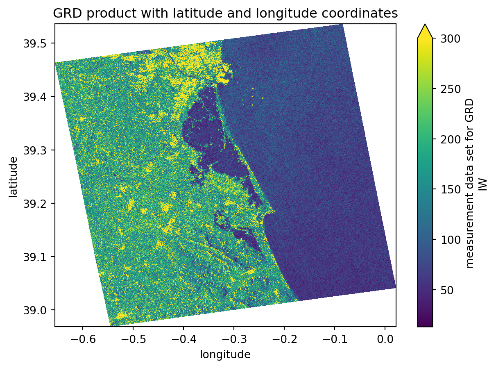
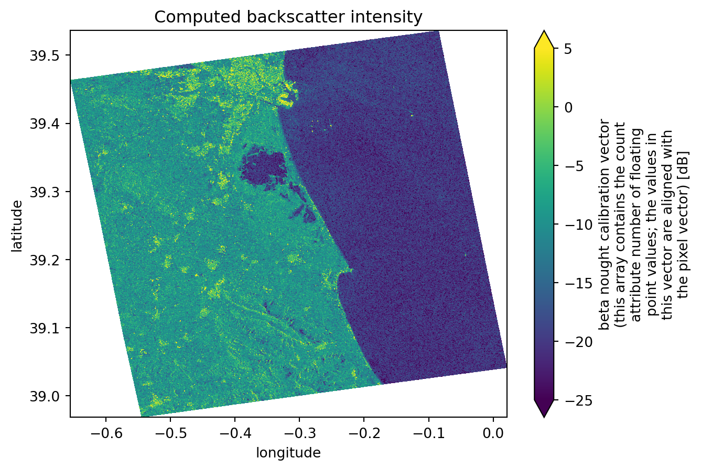
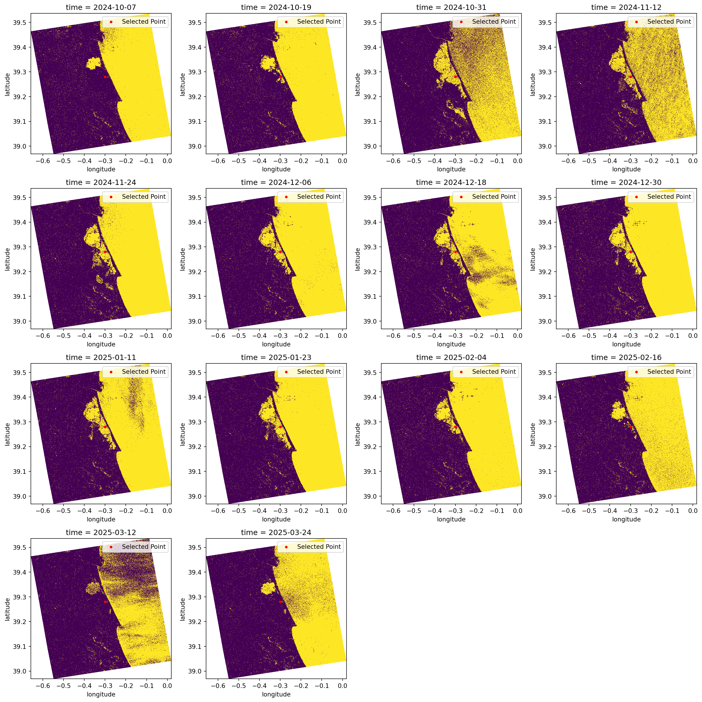
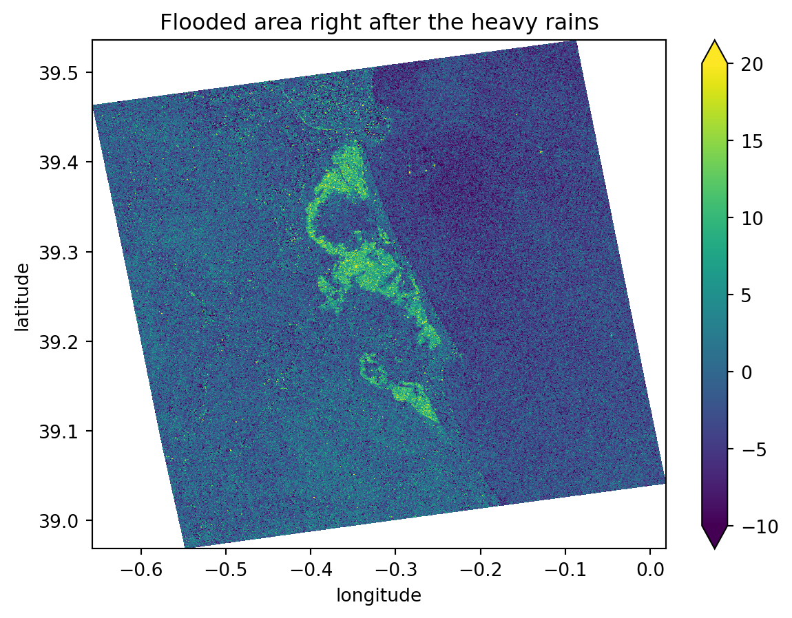
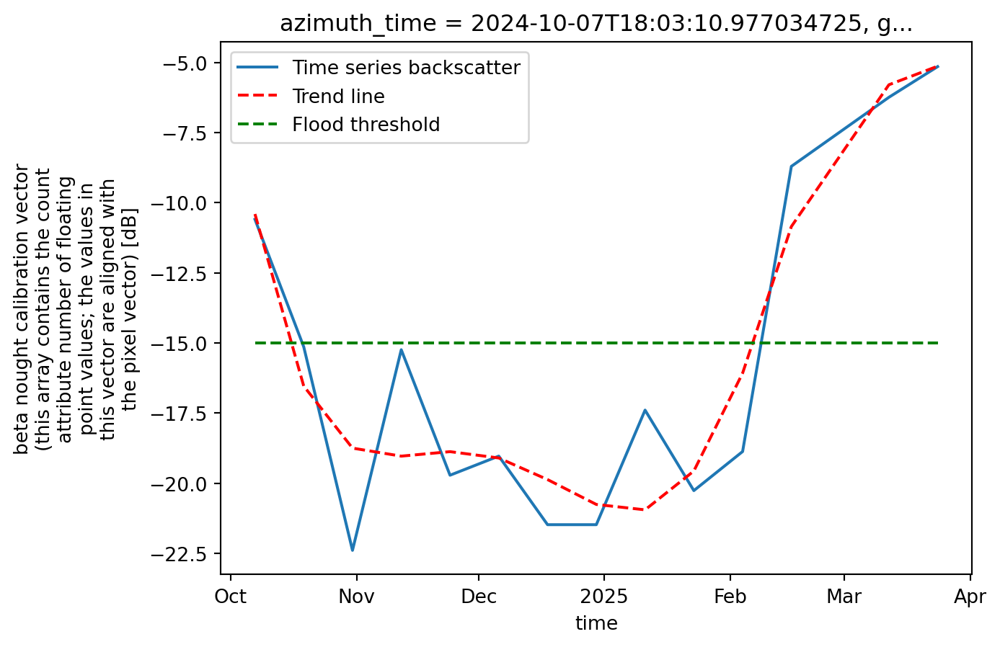

import xarray as xr
import xarray_sentinel
import pandas as pd
import matplotlib as plt
import matplotlib.pyplot as plt
import numpy as np
import dask # these last two libraries are imported to open the datasets faster
from dask.distributed import Client # and in the end take advantage of the optimized .zarr formatFlood Mapping - Time Series Analysis in Valencia
Introduction
Sentinel-1 GDR data is particularly valuable to detect water and underwater areas. Synthetic Aperture Radar (SAR) can capture images day and night, in any weather, a feature especially important for flooding events, where cloudy and rainy weather can persist for weeks. This makes it far more reliable than optical sensors during storms.
With its frequent revisits, wide coverage, and free high-resolution data, Sentinel-1 enables the rapid mapping of flood extents, as will be demonstrated in this workflow. VV polarization is preferred for flood mapping due to its sensitivity to water surfaces, which typically appear darker in the images compared to land surfaces.
The Flooding Event
On October 29, 2024, the city of Valencia (Spain) was hit by catastrophic flooding caused by intense storms, leaving over 230 deaths and billions in damages. This disaster was part of Europe’s worst flood year in over a decade, with hundreds of thousands affected continent-wide. Such events highlight the urgent need for reliable flood monitoring to support emergency response, damage assessment and long-term resilience planning.
With respect to this event, we will demonstrate how to use Sentinel-1 GDR data to map flood extents. We will use 14 Sentinel-1 GRD images from the IW swath, covering the city and metropolitan area of Valencia from October 7, 2024 to March 24, 2025. This includes 2 images captured before, 1 immediately after the heavy rains, and 11 images taken after the flooding event, until the water levels got back to normal: - October 7, 2424 (before) - October 19, 2024 (before) - October 31, 2024 (right after the event) - November 12, 2024 (after) - November 24, 2024 (after) - December 6, 2024 (after) - December 18, 2024 (after) - December 30, 2024 (after) - January 11, 2025 (after) - January 23, 2025 (after) - February 4, 2025 (after) - February 16, 2025 (after) - March 12, 2025 (after) - March 24, 2025 (after)
What we will learn
- 🌊 How to create a workflow to map flood events.
- ⚒️ Basic SAR processing tools.
- 📊 How to create a data cube to perform time series analysis.
Import libraries
Data pre-processing
To search and load the data needed for the analysis, we will follow the processes we presented in Sentinel-1 GRD structure tutorial and S1 basic operations tutorial.
Once we defined our interest Sentinel-1 GRD items, we can see that they contain both VH and VV polarizations.
For this flood mapping context, VV polarization is the choice of interest, as water backscatter is much more visible with it, rather than with VH.
Loading the datatree
The list below shows the names of the products we will use for the flood mapping and time series analysis.
As we have seen in previous chapters, these names already contain valuable information that can be used to search for specific products within the EOPF STAC catalogue.
scenes = ["S1A_IW_GRDH_1SDV_20241007T180256_20241007T180321_056000_06D943_D46B",
"S1A_IW_GRDH_1SDV_20241019T180256_20241019T180321_056175_06E02E_2D52",
"S1A_IW_GRDH_1SDV_20241031T180256_20241031T180321_056350_06E71E_479F",
"S1A_IW_GRDH_1SDV_20241112T180255_20241112T180320_056525_06EE16_DC29",
"S1A_IW_GRDH_1SDV_20241124T180254_20241124T180319_056700_06F516_BA27",
"S1A_IW_GRDH_1SDV_20241206T180253_20241206T180318_056875_06FBFD_25AD",
"S1A_IW_GRDH_1SDV_20241218T180252_20241218T180317_057050_0702F2_0BC2",
"S1A_IW_GRDH_1SDV_20241230T180251_20241230T180316_057225_0709DD_15AC",
"S1A_IW_GRDH_1SDV_20250111T180250_20250111T180315_057400_0710C7_ADBB",
"S1A_IW_GRDH_1SDV_20250123T180249_20250123T180314_057575_0717B9_A784",
"S1A_IW_GRDH_1SDV_20250204T180249_20250204T180314_057750_071EA2_4373",
"S1A_IW_GRDH_1SDV_20250216T180248_20250216T180313_057925_0725AE_8AC7",
"S1A_IW_GRDH_1SDV_20250312T180248_20250312T180313_058275_0733E6_4F5B",
"S1A_IW_GRDH_1SDV_20250324T180248_20250324T180313_058450_073AD0_04B7",
]
zarr_paths = []
for scene in scenes:
zarr_paths.append(f"https://objects.eodc.eu/e05ab01a9d56408d82ac32d69a5aae2a:notebook-data/tutorial_data/cpm_v260/{scene}.zarr")Next, we will load all zarr datasets as xarray.Datatrees. Here we are not reading the entire dataset from the store; but, creating a set of references to the data, which enables us to access it efficiently later in the analysis.
client = Client() # Set up local cluster on your laptop
client
@dask.delayed
def load_datatree_delayed(path):
return xr.open_datatree(path, consolidated=True, chunks="auto")
# Create delayed objects
delayed_datatrees = [load_datatree_delayed(path) for path in zarr_paths]
# Compute in parallel
datatrees = dask.compute(*delayed_datatrees)Each element inside the datatree list is a datatree and corresponds to a Sentinel-1 GRD scene datatree present on the list above.
# Each element inside the datatree list is a datatree and corresponds to a Sentinel-1 GRD scene datatree present on the list above
type(datatrees[0]) xarray.core.datatree.DataTreeDefining variables
# Number of scenes we are working with for the time series analysis
DATASET_NUMBER = len(datatrees) If we run the following commented out code line we will be able to see how each datatree is organized within its groups and subgroups (as explained in this section). From this datatree, we took the groups and subgroups constant ID numbers used to open specific grouos and variables such as: - Measurements group = 7 so, in order to open this group, on the first element of our list of scenes, over the first polarization VV, we do datatrees[0][datatrees[0].groups[7]] - Calibration group = 33 so, in order to open this group, on the first element of our list of scenes, over the first polarization VV, we do datatrees[0][datatrees[0].groups[33]]
Over the course of this notebook these IDs will be used to call variables and compute some other functions.
# Opening the measurements group from the datatree
datatrees[0][datatrees[0].groups[7]]<xarray.DatasetView> Size: 870MB
Dimensions: (azimuth_time: 16677, ground_range: 26061)
Coordinates:
* azimuth_time (azimuth_time) datetime64[ns] 133kB 2024-10-07T18:02:56.455...
* ground_range (ground_range) float64 208kB 0.0 10.0 ... 2.606e+05 2.606e+05
line (azimuth_time) int64 133kB dask.array<chunksize=(16677,), meta=np.ndarray>
pixel (ground_range) int64 208kB dask.array<chunksize=(26061,), meta=np.ndarray>
Data variables:
grd (azimuth_time, ground_range) uint16 869MB dask.array<chunksize=(4096, 8192), meta=np.ndarray># Some other important constant ID numbers
MEASUREMENTS_GROUP_ID = 7
GCP_GROUP_ID = 28
CALIBRATION_GROUP_ID = 33We now define the thresholds that will be used for the flood mapping analysis. These values are not fixed and they can be calibrated and adjusted to achieve a better fit for different regions or flood events.
In SAR imagery, open water surfaces typically appear very dark because they reflect the radar signal away from the sensor. This results in low backscatter values. In our case, pixels with a backscatter lower than approximately –15 dB are likely to correspond to water.
WATER_THRESHOLD_DB = -15It is interesting to study the flood event over a specific point within the area of interest.
Therefore, we are storing the coordinates of an anchor point inside the area which is not usually covered by water. After the heavy rain, it became flooded for a few weeks.
TARGET_LAT = 39.28
TARGET_LONG = -0.30Extracting information from the .zarr
As explained in the S1 basic operations tutorial, we will perform over all the selected data the following operations:
- Slicing the data to meet our area of interest and decimate it
- Assigning latitude and longitude coordinates to the dataset
- Computing the backscatter
Slicing and decimating GRD variable
To begin with, we access all our .zarr items measurements groups by creating a list storing all of them.
measurements = []
# Looping to populate the measurements list with only the measurements groups of each dataset on the datatree list
for i in range(DATASET_NUMBER):
measurements.append(datatrees[i][datatrees[i].groups[MEASUREMENTS_GROUP_ID]].to_dataset())We continue by decimating gdr’s data. As we are only interested into a specific area (Valencia).
Because we haven’t assigned latitude and longitude coordinates yet, we can not crop the data acording to coordinates. On top of this, even though different products have the same shape and dimensions (azimuth_time and ground_range), the values for the same indexes number don’t match so either ways, it wouldn’t be doable to slice the data acording to coordinate values (which would always be different for different products).
# Plotting the first decimated GRD product from our list, corresponding to the whole scene
measurements[0].grd.isel(
azimuth_time=slice(None, None, 20),
ground_range=slice(None, None, 20)).plot(vmax=300)
plt.show()
print("Azimuth time has", measurements[0].grd.shape[0], "values.")
print("Ground range has", measurements[0].grd.shape[1], "values.")Azimuth time has 16677 values.
Ground range has 26061 values.The solution found is to slice the data by the coordinates index positon using isel() function. Just before, a rought plotting was done in order to visualize the whole image. it was also plotted the azimuth_time and ground_range shape. Considering the are we are interested, and after a few tests and direct proportion calculations, we see that we need: - for azimuth_time, more or less from the last 10000 positions to the last 4500; - for ground_range, more or less from the last 7000 positions to the last 2000;
grd = []
# Looping to populate the grd list with only the grd subgroups of each dataset on the
# datatree list while simultaneaously slicing the data to match our AOI and decimating it
for i in range(DATASET_NUMBER):
grd_group = measurements[i].grd
azimuth_time_len = grd_group.sizes['azimuth_time']
ground_range_len = grd_group.sizes['ground_range']
grd.append(grd_group.isel(
azimuth_time=slice((azimuth_time_len - 10000), # beginning of the slice
(azimuth_time_len - 4500), # end of the slice
10), # interval of the slice/decimation
ground_range=slice((ground_range_len - 7000),
(ground_range_len - 2000),
10)
))grd[1].shape(550, 500)# Plotting the second sliced and decimated GRD product from our list
grd[1].plot(vmax=300)
plt.title("Sliced GRD product for the area of interest")
plt.show()
Assigning latitude and longitude coordinates
We will execute the following step to assign latitude and longitude coordinates to our datasets: 1. Creating a gcp dataset interpolated with the grd dataset; 2. Assigning the latitude and longitude coordinates to the grd dataset;
These steps are very important because we are computing a georeferenced image, which allows direct comparison with other spatial datasets. Until now, the image coordinates were expressed in azimuth_time and ground_range, which makes sense in a SAR context but not for geographical analyses.
gcp = []
# Looping to populate the gcp list with only the gcp subgroups of each dataset on the datatree list
for i in range(DATASET_NUMBER):
gcp.append(datatrees[i][datatrees[i].groups[GCP_GROUP_ID]].to_dataset())
gcp[i] = gcp[i].interp_like(grd[i]) # interpolate gcp to match the decimation done before# Looping to assign the latitude and longitude coordinates to grd
for i in range(DATASET_NUMBER):
grd[i] = grd[i].assign_coords({"latitude": gcp[i].latitude,
"longitude": gcp[i].longitude})# Plotting the third sliced and decimated GRD product from our list with latitude and longitude coordinates
grd[2].plot(x="longitude", y="latitude", vmax=300)
plt.title("GRD product with latitude and longitude coordinates")
plt.show()
Computing backscatter
Again, the following steps are just recreating what was done before, but this time over more datasets. For further detailed information, take a look at this chapter.
Firstly we access the variables concerning the calibration values. These are the values that are going to be used for the backscatter computation. Because we´ve decimated the gdr dataset, we also need to decimate the calibration variables in the same way.
After it, using the xarray_sentinel library, we compute the backscatter for each dataset. As input varialbes, we use the gdr dataset and the calibration variables we´ve just accessed.
calibration = []
# Looping to populate the calibration list with only the calibration groups of each dataset on the datatree list
for i in range(DATASET_NUMBER):
calibration.append(datatrees[i][datatrees[i].groups[CALIBRATION_GROUP_ID]].to_dataset())
calibration[i] = calibration[i].interp_like(grd[i]) # interpolate calibration to match the decimation done beforeintensity = []
# Looping to populate the intensity list with the calibrated intensity array originated from xarray_sentinel.calibrate_intensity function
for i in range(DATASET_NUMBER):
intensity.append(xarray_sentinel.calibrate_intensity(
grd[i],
calibration[i].beta_nought,
as_db=True))# Plotting the backscatter intensity for the second dataset on the list
intensity[1].plot(x="longitude", y="latitude", vmin=-25, vmax=5)
plt.title("Computed backscatter intensity")
plt.show()
Create a datacube to prepare for time series analysis
Since we are performing a time series with .zarr, instead of analysing individual items stored in a list, we can create a combined dataset, containing all the data, stacked together by a new dimension time. Through the stacking, we are building a three-dimensional datacube.
To get values for the new dimension time, we need to extract the acquisiton dates for each product.
data = []
# Looping to populate the data list with all the acquisition dates from the datatree
for i in range(DATASET_NUMBER):
data.append(intensity[i].azimuth_time.values[1].astype('datetime64[D]'))
data[np.datetime64('2024-10-07'),
np.datetime64('2024-10-19'),
np.datetime64('2024-10-31'),
np.datetime64('2024-11-12'),
np.datetime64('2024-11-24'),
np.datetime64('2024-12-06'),
np.datetime64('2024-12-18'),
np.datetime64('2024-12-30'),
np.datetime64('2025-01-11'),
np.datetime64('2025-01-23'),
np.datetime64('2025-02-04'),
np.datetime64('2025-02-16'),
np.datetime64('2025-03-12'),
np.datetime64('2025-03-24')]Coregistration
The next step is sensitive. In order to stack data into an array, the dimension values need to match perfectly, which is not the case (Sentinel-1 GRD data dimension values differ from one product to the other).
This problem resembles the coregistrations problem. This refers to the process of aligning two or more images, in a way that each pixel in one image corresponds to the exact same ground location in the others. To have a deeper overview of this process you can take a look here.
There are only a few software programmes and packages that can perform coregistration, and most of the time, these processes are very time-consuming and resource-intensive.
Since the GRD images we are working with already have the same dimensions (cropped during the initial steps of the tutorial), we can perform our own coregistration. Such process involves: - Keeping the coordinates of one intensity dataset as the reference - Resetting the coordinates of the other ones - Reassigning the coordinates to match the reference dataset and that they can all overlay perfectly.
To do so we will use the function reset_coords() to reset the original coordinates and then use the assign_coords function after.
reference_coords = intensity[0].coords # setting the first coordinate values as reference
datasets_aligned = []
# Looping to populate the datasets_aligned list with the newly assigned coordinate values
for ds in intensity:
ds_no_coords = ds.reset_coords(drop=True)
datasets_aligned.append(ds_no_coords.assign_coords(reference_coords))Now, the data is fully prepared to be stacked into a new array that contains all the datasets. They share the same coordinate values and everything is aligned along a third dimension, time. To stack all the datasets into only one we will use the concat() function from the xarray library.
# Creating the data cube, stacking all the datasets over a new time dimension
intensity_data_cube = xr.concat(datasets_aligned, dim=xr.DataArray(data, dims="time"))
# There is a new dimension coordinate (time)
intensity_data_cube<xarray.DataArray (time: 14, azimuth_time: 550, ground_range: 500)> Size: 15MB
dask.array<concatenate, shape=(14, 550, 500), dtype=float32, chunksize=(1, 398, 500), chunktype=numpy.ndarray>
Coordinates:
* azimuth_time (azimuth_time) datetime64[ns] 4kB 2024-10-07T18:03:06.46487...
* ground_range (ground_range) float64 4kB 1.906e+05 1.907e+05 ... 2.405e+05
line (azimuth_time) float64 4kB dask.array<chunksize=(550,), meta=np.ndarray>
pixel (ground_range) float64 4kB dask.array<chunksize=(500,), meta=np.ndarray>
latitude (azimuth_time, ground_range) float64 2MB dask.array<chunksize=(550, 500), meta=np.ndarray>
longitude (azimuth_time, ground_range) float64 2MB dask.array<chunksize=(550, 500), meta=np.ndarray>
* time (time) datetime64[s] 112B 2024-10-07 2024-10-19 ... 2025-03-24
Attributes:
_eopf_attrs: {'coordinates': ['azimuth_time', 'line', 'pixel', 'ground_r...
dtype: <u2
long_name: beta nought calibration vector (this array contains the cou...
units: dBFlood mapping and time series analysis
The last step is to perform the time series and flood mapping analysis.
Simple visualisation of all datasets selected
First, we can plot all the datasets simply to create a visualisation of the flood. In addition to these plots, we are also plotting a chosen latitude and longitude point (as defined at beginning of this tutorial). The coordinate serves as a measure of comparison between all the datasets and from within different analysis methods.
When we look over all the items plotted, we can clearly see that the significant flood event happened between the 19th and the 31st of October (it occurred on the 29th of October 2024).
Additionally, we can see that the backscatter displaying the water presence was only going back to normal ranges around mid-February 2025.
cols = 4 # setting up column number
rows = int(np.ceil(DATASET_NUMBER / cols)) # setting up row number according to clumn number
fig, axes = plt.subplots(rows, cols, figsize=(4*cols, 4*rows))
axes = axes.flatten()
for i in range(DATASET_NUMBER):
ax = axes[i]
intensity_data_cube[i].plot( # plotting all the datasets stored in the data cube
x="longitude", y="latitude",
vmin=-25, vmax=5,
ax=ax,
add_colorbar=False
)
ax.scatter(TARGET_LONG, TARGET_LAT, color="red", marker="o", s=10, label="Selected Point") # also plotting the known point defined before
ax.legend()
for j in range(i+1, len(axes)):
axes[j].axis('off') # to avoid having empty cells
plt.tight_layout()
plt.show()
Create a flood map based on threshold values
It is known through literature and other sources that water appears as darker pixels, typically with values lower than -15 dB. This is a very good method for identifying water because separating the pixels within this threshold value will give us almost a True and False map for pixels which are greater or smaller than the defined threshold.
In the plots below, we classify the pixels with backscatter values equal to or lower than -15 in yellow. Conversely, in purple, we see the pixels that have backscatter values greater than -15.
This type of visualisation allows us to easily identify flooded and non-flooded areas.
fig, axes = plt.subplots(rows, cols, figsize=(4*cols, 4*rows))
axes = axes.flatten()
for i in range(DATASET_NUMBER):
ax = axes[i]
water_mask = (intensity_data_cube[i] <= WATER_THRESHOLD_DB) # defining the water mask from the threshold
water_mask.plot( # plotting all the water masks
x="longitude", y="latitude",
ax=ax,
add_colorbar=False
)
ax.scatter(TARGET_LONG, TARGET_LAT, color="red", marker="o", s=10, label="Selected Point") # again plotting the known point defined before
ax.legend()
for j in range(i+1, len(axes)):
axes[j].axis('off')
plt.tight_layout()
plt.show()
Create a map showing differences between two images
Knowing the exact flood date, which we have, and from the images plotted previously, we can easily see that the second image is the one right before the flood event and that the third image is the one directly after it. These two images show significant differences in the flooded areas and backscatter values, ranging from -5 dB (in the image before the event) to -20 dB (in the image directly after the event).
For this reason, when we compute the difference between the two images, we will mostly get: - Values around 0 dB for areas that did not change - Values ranging from -15 dB to -20 dB in the precise flooded areas.
This is an excellent way to determine precisely which areas were flooded. As we are comparing an image from before the event with another one taken at the highest possible flooding point, the differences between them will be extreme.
dif = (intensity_data_cube[1]-intensity_data_cube[2]) # computing the difference between third and second dataset
dif.plot(x="longitude", y="latitude", vmin=-10, vmax=20)
plt.title("Flooded area right after the heavy rains")
plt.show()
Create a time-series plot of one location within the flood
Taking advantage of the data cube we have created over a new time dimension, it is much easier to plot the data over this new dimension, as in a time series plot.
As our data now shares same dimensions and shape, we can choose to plot a backscatter analysis over the specific latitude and longitude point we defined earlier.
As these coordinates might not be exactly the ones shown on the dimension values, we need to perform some operations to find the closest values to the desired coordinates.
We will now change the latitude and longitude coordinate values and see how the corresponding azimuth_time and ground_range values and indexes change.
# Find how far each pixel's latitude and longitude is from the target point
abs_error = np.abs(intensity_data_cube.latitude - TARGET_LAT) + np.abs(intensity_data_cube.longitude - TARGET_LONG)
# Get the indexes of the closest point
i, j = np.unravel_index(np.argmin(abs_error.values), abs_error.shape)
azimuth_time_index = i
ground_range_index = j
# Get the coordinate values of the closest point
azimuth_time_value = intensity_data_cube.azimuth_time[i].values
ground_range_value = intensity_data_cube.ground_range[j].values
print("Nearest azimuth_time:", azimuth_time_value, ", with index:", azimuth_time_index)
print("Nearest ground_range:", ground_range_value, ", with index:", ground_range_index)
# Slice the data cube in order to get only the pixel that corresponds to the target point
target_point = intensity_data_cube.isel(ground_range=ground_range_index,
azimuth_time=azimuth_time_index)Nearest azimuth_time: 2024-10-07T18:03:10.977034725 , with index: 301
Nearest ground_range: 217810.0 , with index: 272Now we can plot the data cube, showing the backscatter intensity over the target point we defined earlier. Since the datasets are stacked along the time dimension, it becomes much easier to plot the evolution of water backscatter at a specific location. This provides an effective way to monitor the flooding status at that point.
We can also add a line representing the water threshold we defined. Any point with a backscatter value below this threshold will be classified as water, thus flooded.
# Plot the sliced data cube
target_point.plot(label='Time series backscatter')
x = target_point[target_point.dims[0]].values # getting the x axis values (time)
y = target_point.values # getting the y axis values (backscatter intensity)
# Creating the trend line
x_num = np.arange(len(x))
z = np.polyfit(x_num, y, 6)
p = np.poly1d(z)
plt.plot(x, p(x_num), 'r--', label='Trend line')
plt.plot(x, [-15] * len(x), 'g--', label='Flood threshold')
plt.legend()
plt.show()
Challenges
While using the optimised .zarr format saves a lot of time and makes creating workflows relatively simple and achievable, there are still a few challenges to handle and to keep in mind:
Sentinel-1 GRD Data Availability: For Sentinel-1 GRD, most of the datasets are not yet available on the STAC catalogue. This makes searching and data handling harder because, in the end, only a few products are correctly converted.
Backscatter Computation Libraries: There are only a few working Python libraries that handle backscatter computation. When considering the
.zarrformat, the list becomes even smaller.xarray_sentinelis a very good library that handles intensity backscatter computation with.zarr.Terrain Correction: With the available libraries, it is very difficult to perform geometric and radiometric terrain correction. The existing tools that support the .
zarrformat are not yet fully operational and do not accept the format as it is.Image Coregistration: As discussed previously, the .
zarrformat is perfect for handling multiple datasets simultaneously and, thus, for time series analysis. The problem is that there is no library or package that performs coregistration of Sentinel images, especially with the.zarrformat. And it remains a significant problem because coregistering multiple Sentinel images is an important step for most SAR workflows.
Conclusion
The .zarr format is particularly well suited for hazard analysis because it enables multiple datasets to be combined into a single structure, either as a data cube or as a list of datatrees. This makes it ideal for rapid, multi-temporal, and multi-spatial monitoring. Unlike the .SAFE format, which required downloading entire products, .zarr only loads the specific groups needed, while the rest is accessed on the fly. As a result, both data handling and subsequent operations are much faster and more efficient.
Although the ecosystem for .zarr is still evolving, there are already promising developments. In the past, .SAFE products could be fully processed on applications like SNAP, but similar completeness has not yet been reached for .zarr. Nevertheless, libraries such as xarray_sentinel and are beginning to cover essential SAR operations. This potential is illustrated in the Valencia flood case study, where Sentinel-1 backscatter sensitivity to water enabled clear mapping of flood extent and duration. The same workflow can be adapted to other flood events by adjusting the relevant thresholds and parameters to match local conditions.
What’s next?
This online resource is under active development. So stay tuned for regular updates 🛰️.